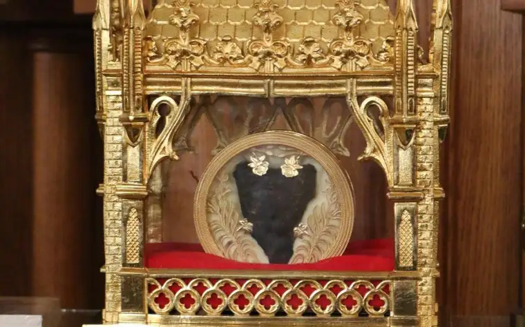
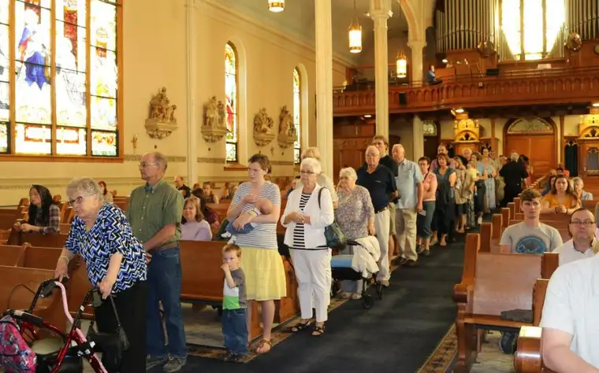
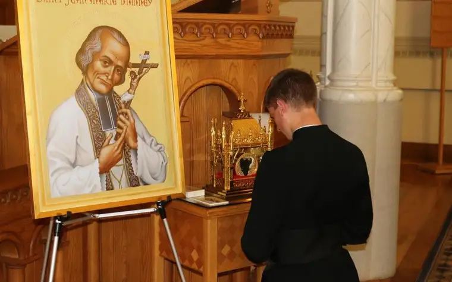
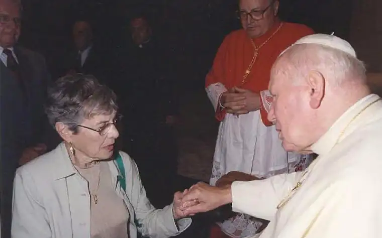

FARGO — The guest of honor came, but not in whole. Instead, after traveling across the ocean, his heart arrived in Fargo last week, representing the love of a humble priest from Ars, France, who died 160 years ago — and whose holy example, the faithful say, we need more than ever.

“I was overwhelmed; it was just beautiful,” said Sue Judd, wiping away tears, after spending time with St. John Vianney’s heart at St. Mary’s Cathedral in downtown Fargo. “The fact that it’s his heart, and you can see it, that’s miraculous in itself.”
She was among several hundred who flocked here May 29 to venerate the incorrupt heart, encased in a 17th century golden reliquary vessel, which was processed into the Adoration chapel with assistance from Monsignor Joseph Goering, cathedral pastor.
“He went to poor, rural places; we’re rural here in North Dakota, too,” Goering said of Vianney.

Part of a national tour hosted by the Knights of Columbus, the heart stayed in Fargo through the night and into the morning of May 30 — the 120th anniversary of the cathedral’s dedication — before being transferred to the main sanctuary, where it remained through the noon Mass. The faithful who came touched part of a man born in 1786 who transformed a wayward village during tumultuous times, eventually drawing throngs from elsewhere who divulged their sins to grow closer to Christ.
“It’s common, especially in Italy and France, for different pieces of the body to be separated,” said Mary Hanbury, catechesis director for the Fargo Diocese.
She explained that relic veneration flows from Jewish culture and, in Christianity, from times of persecution when the faith was practiced in the catacombs, as well as intercessory prayers said before the martyrs, buried there, who’d died for Christ. “Eventually, those bones were taken out of the catacombs and put into churches.”

In medieval times, people were accustomed to seeing dead bodies in preparation for burial, Hanbury said. Today, she says people can get “creeped out” by relics because we’re more removed from death.
The New Testament references an early form of relics in Matthew 9:18-26 when a woman is healed by touching the hem of Jesus’ garment, and in Acts 19:12 when cloths touched by St. Paul were used to heal the sick and drive out demons.
Offering his own explanation for relic veneration, Goering asked, “Why does a nonbeliever go to Notre Dame? To see beauty, transcendence. We’re drawn naturally, realizing there’s more here than what meets the eye.”
Also, like Jesus, we’re incarnational. “It speaks to our desire to want to be close to holy things by having objects to venerate.”
But, Goering emphasized, it’s Jesus himself behind any associated miracle or answered prayer.
Heather Morgan, Palos Verdes, Calif., said she was amazed at the line of faithful wrapped around a Los Angeles cathedral to glimpse the saint’s heart when it traveled there in February.
“You felt the Lord’s love through all these people, and you felt St. John Vianney’s heart pumping the love of Christ through everybody’s heart,” she said. “It was really beautiful. In this area, you don’t get that a lot.”
Peter Sonski, of New Haven, Conn., a custodian for the relic, said North Dakota marked the 46th of 48 contiguous states to welcome the relic since the tour launched in Baltimore in November. It will have been visited by 250,000 people by the tour’s end next Wednesday, June 12.
“People seem to have been especially pleased for the opportunity to express their hope for renewal in the church.”
Despite the general unfamiliarity of the practice, he said, “Who of us doesn’t go to our parents’ or grandparents’ graves and pay honor to them, and who wouldn’t make a bid on the sweaty, used jersey of our favorite athlete?”
These are similar to relics, he said, and yet, “This is a miracle, the heart of a saint who died 160 years ago, was buried, and whose body was not touched by decay.”
Sonski called relic veneration “kind of a heart-to-heart with heaven,” adding, “It’s the opportunity to seek the intercession of a saint for the church here in the U.S., for priests in Fargo and across the country, and for healing and renewal of the church as a whole.”
In Fargo, visitors were offered a rare chance to venerate the relic and worship Jesus in the Eucharist at an all-night vigil, he said, noting that in smaller areas, “It’s been the faithful remnant that shows up and keeps company” with the relic.
And it’s not just Catholics who come, Sonski said. In Utah, many Mormons stopped through. “Sometimes they come because it has a bit of fascination, and other times, it’s an opportunity to learn and receive some grace,” he said.
Sonski added that the heart “is really the very center of the person, of their human, emotional and spiritual life,” while Goering said his prayer before St. John Vianney’s heart was “to have a heart like his that burns for the heart of Jesus.”
Mary Hollinshead, Valley City, N.D., was part of a two-vehicle pilgrimage that included a group of teens from a faith-formation program at St. Catherine’s parish.
“On the way here, we were discussing how this relic represents a man that loved so well that his heart stayed that way,” she said. “To be able to love like that is a breathtaking thing. That’s what we want our kids exposed to.”
Karen Monson said seeing the saint’s heart made her think of eternity.
“If God can keep a body incorrupt all these years, he’s trying to tell us that we, too, can live forever.”
ARCHIVE: Read more of Roxane B. Salonen’s Faith Conversations
Relics tied to mother-in-law’s miraculous recovery
MOORHEAD — Though some may scoff at the notion that touching the relics of the dead could procure a miracle for the living, Jeanine Bitzan won’t be found among them. Her mother-in-law’s life, against the odds, offers plentiful proof.
“That miracle has given us a heightened appreciation and awareness of holy relics,” she says.
It was in 1966, when her husband John was only 5 months old, that his mother, Patricia, St. Cloud, Minn., received a breast cancer diagnosis. “That turned into a terminal cancer that spread to her lung and lymph nodes, after all the medications and surgery didn’t work,” Bitzan explains.
At the news, family friend the Rev. Arnold Weber recommended they research Columba Marmion, whose life was being investigated by the Vatican in Rome for possible canonization. They learned that after the Benedictine monk died in 1923, people began claiming miracles associated with their prayers to him.
“When they opened up his tomb in the 1960s to transfer him to a new resting place, they basically found he was incorrupt,” Bitzan says, “so they started the cause for his sainthood.”
Weber suggested they pray for his intercession, both for Patricia’s healing and Marmion’s beatification — a step toward full canonization in the Catholic Church. The family traveled to the Belgian abbey where Marmion had lived, and after four days of laying her hands on his tomb and having Mass with the monks, Bitzan says her mother-in-law felt a definite connection, “a closeness.”
“She touched all his relics,” Bitzan says, including one on St. Gerard that Marmion had carried on his pectoral cross and those in his choir robes. “They came back and were at peace, and just knew everything was in God’s hands.”
On her husband’s first birthday, Bitzan says the miracle of his mother’s healing began: An X-ray of her lungs showed that the cancer was disappearing with no explanation.
“Even the doctors that helped Pat, who weren’t religious by any means, said when they were interviewed by the Vatican on this miracle that no medicine that could have done that.”
Bitzan says Patricia’s main prayer was that she would live long enough to mother her children, which she did, living another 48 years. The family attended the beatification ceremony for Blessed Marmion in Rome with Pope John Paul II in September 2000.

“(Relics) are pieces of the saints’ holy lives, whether of their bodies or their garments or something they touched,” Bitzan says. “God gives us these holy relics to bring the earthly to the divine.”
And God gives us saints to be holy examples for us, she adds. “We’re all called to be saints, called to this incorruptible, everlasting life.”
[For the sake of having a repository for my newspaper columns and articles, I reprint them here, with permission, a week after their run date. The preceding ran in The Forum newspaper on June 7, 2019.]